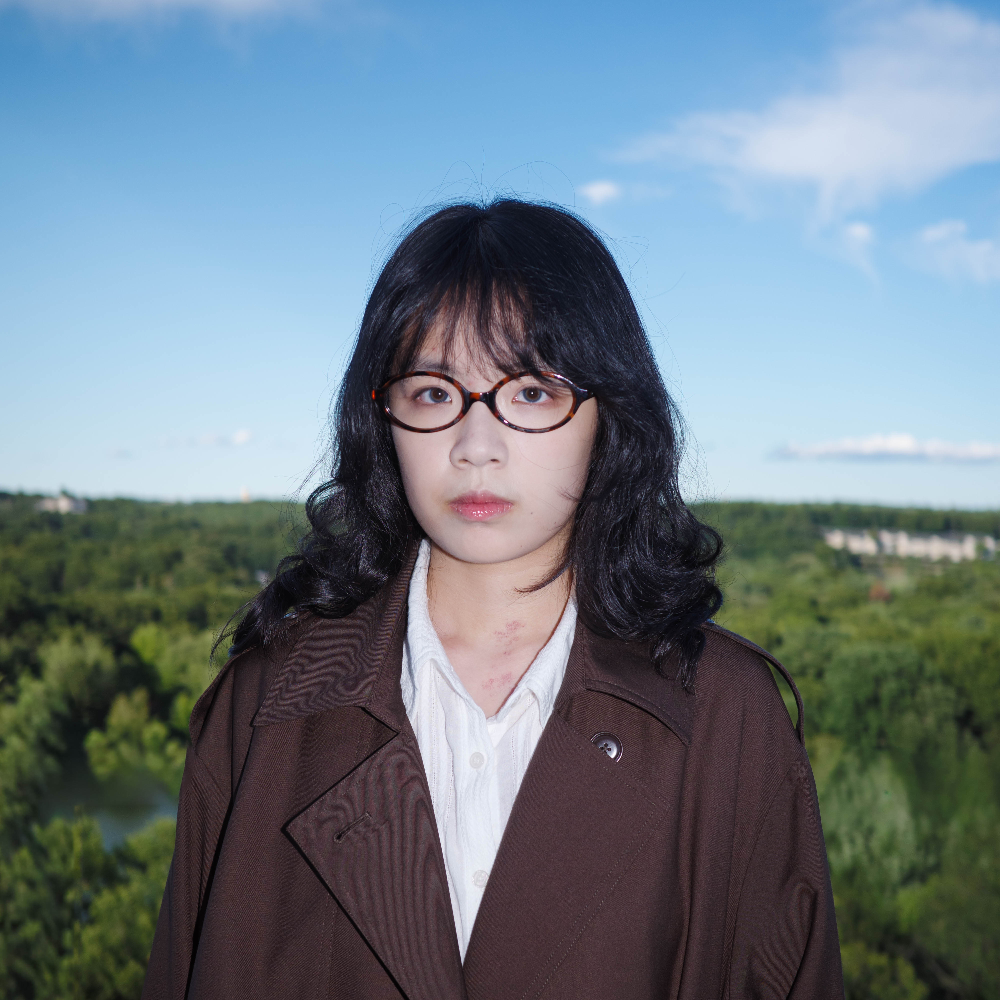

Ginny Dong


Ginny is a UX designer with a background in human factors psychology and visual arts. She studies how people think and decide, and turn that into interfaces that are clear and easy to trust.
When I'm not designing, I'm usually chasing light with my camera, planning my next trip, or playing guitar in a band with my friends. I like going to new places and trying new media in my art — each one turns a piece of my life into something I haven't experienced before.
Sign→
Click anywhere to return